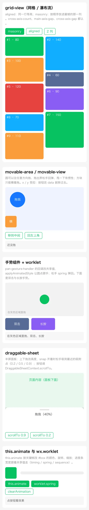
iOS · iPadOSSDK ready
Swift Package / CocoaPods · MiniProgramView (UIKit)
CAMetalLayer → Metal · CPU fallback
Rust · self-rendered · aligned with Skyline
A mini-program rendering engine written from scratch in Rust. Hand it a WeChat
mini-program source tree (WXML / WXSS / JS / app.json) and a writable pixel buffer,
and it draws the UI and runs the interactions. In between there is
no browser engine, no platform widgets, no third-party 2D graphics library
— the CPU draws every pixel, and an optional GPU backend only composites the layers,
byte-identical to the CPU. All 503 official wx.* APIs are
there, and Skyline's own components — grid-view, gesture handlers,
draggable-sheet, worklet animations — run on the same pipeline.
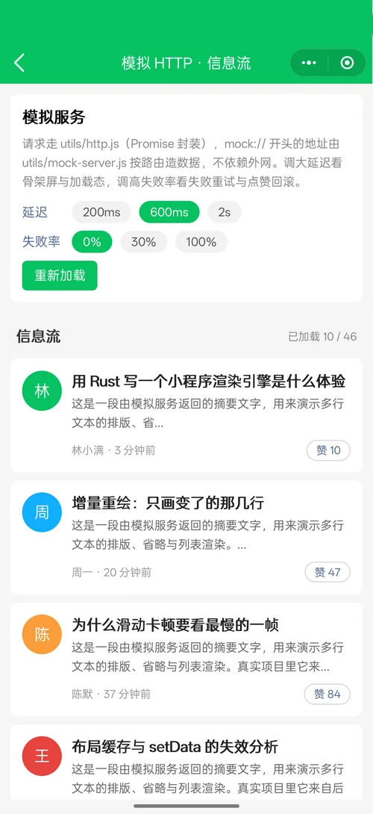
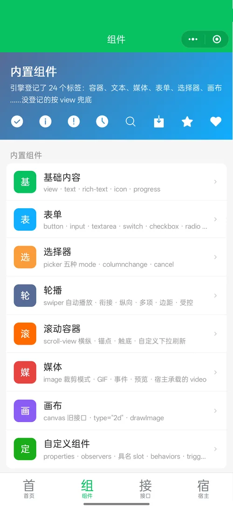
750×1334 physical pixels, pure CPU
list scrolling with setData, down from 11.2%
scenes byte-identical, fallback included
15 pages of the same source, per pixel
plus 65 byte-reproducible baselines
every name in the index, plus 57 component tags
One engine, every platform
The engine only needs a writable pixel buffer (or a GPU surface) and a clock. Every platform below
runs the same Rust code, the same layout and the same wx.* runtime; only the thin host
layer differs. The CPU render is the byte-exact reference on all of them.

Swift Package / CocoaPods · MiniProgramView (UIKit)
CAMetalLayer → Metal · CPU fallback
AAR · Kotlin MiniProgramView (SurfaceView)
Vulkan / GLES via wgpu · CPU fallback
// XComponent + OH_NativeWindow
XComponent({ type: 'surface',
libraryname: 'mini_render' })
// native: mr_app_create → mr_app_attach
// → mr_app_pump(vsync) each frameC ABI include/mini_render.h + NAPI
XComponent native window · CPU blit
Rust crate · winit window · or the C ABI
Metal via wgpu · CPU fallback
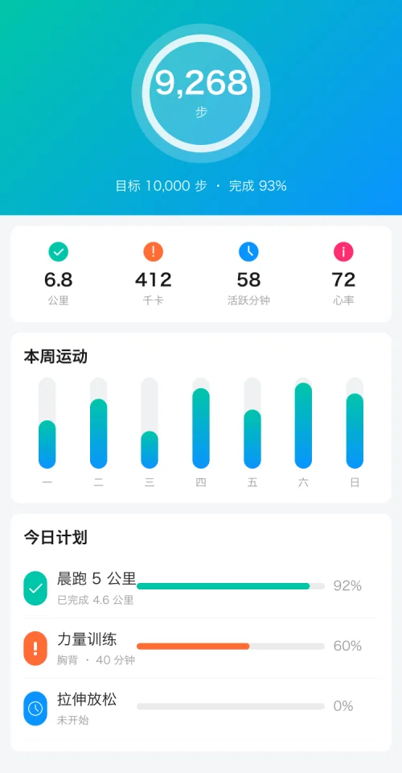
Rust crate · winit window · or the C ABI (DLL)
DX12 / Vulkan via wgpu · CPU fallback
$ cargo run --release --bin mini-app-window \
sample-app --snapshot out/
✓ 15 pages → out/*.png
$ python3 tools/pixdiff.py a.png b.png
0.00 % · bbox noneRust crate · winit window · headless PNG
Vulkan via wgpu · CPU in CI
mini_render plugin · Texture / PlatformView
Same engine library underneath
Compile the mini-program to static H5
Pixel-compared against the native render
Status is what we have verified ourselves: Android on a OnePlus 90 Hz phone and an emulator; the iOS SDK builds for
device and simulator and its Metal path is covered by tests; the desktop window and headless snapshots run daily on macOS.
Windows and Linux build from the same winit / wgpu code but have no CI job yet. HarmonyOS has a documented C ABI path
(XComponent + OH_NativeWindow, see the integration guide); a packaged ArkTS SDK is still being built.
Why self-render
The engine version follows the OS, the same CSS lays out differently across Android builds, first paint waits for the engine to boot, scroll and gesture feel are decided by the engine, and every native capability needs a bridge. Self-rendering turns all of that into your own code: one copy of layout and paint for every platform, with frame scheduling, gesture arbitration and memory ceilings in your hands.
| Approach | How it works | This engine |
|---|---|---|
| Mini-program WebView render layer | WXML → DOM, handed to a browser engine for layout and paint | No DOM, no browser engine |
| React Native / Weex | JS description → mapped onto platform widgets | No mapping to platform widgets, not at the mercy of their differences |
| Flutter | Dart + Skia, self-rendered | Closest but this is Rust + an in-house rasterizer, no Skia — and it ships as a Flutter plugin too |
| Electron / Tauri | Ship or reuse a browser | No bundled browser; about 40 MB on arm64, GPU compositor included |
| WeChat Skyline | Native rendering with self-drawn components | Alignment target semantics, feel, event model, API surface and component set all follow it |
The price is real too: CSS coverage has to be filled in one property at a time, and
performance is spent CPU cycle by CPU cycle. The only remaining cross-platform difference
comes from system fonts — to remove even that, bundle a font with the app
(assets/SourceHanSansSC-Regular.otf is there for exactly that). With glyphs
expanded on first use it costs about 2MB, close to the system font's 1.4MB.
Skyline alignment
Checked against WeChat's own API index and component catalog, not a hand-picked list.
All 503 wx.* names exist at runtime; what only a host can do
(Bluetooth, payment, login…) fails at once with a reason until the host claims it, and
canIUse says so. Skyline-only components — grid-view, gesture
handlers, draggable-sheet, worklet animations — go through the same layout,
paint and partial-repaint pipeline as everything else.
516 keys at runtime; host-only ones fail until the host claims them
incl. 17 built-in components and 8 native-component placeholders
same-layer rendering on Android, measured on a phone
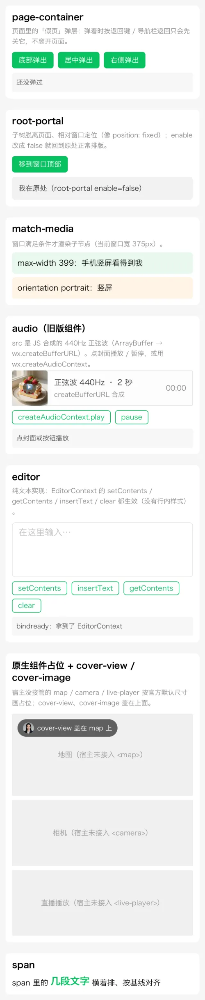
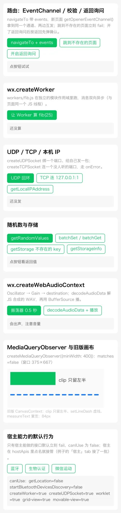
app.json, success after the new page's onShow, two-way EventChannel, route events, enableAlertBeforeUnloadcreateTCPSocket / createUDPSocket, getLocalIPAddress, createWorker in an isolated module scopedecodeAudioData, createMediaQueryObserver, createOffscreenCanvas, createBufferURLgetStorageInfo, OS-backed getRandomValues, getVideoInfo parsed from the MP4, legacy canvas clip / setLineDash / measureTexthostApis (Flutter, Android, iOS, C ABI) and the call is yours; leave it out and it fails immediately with an errMsg saying the host can take overchooseImage / chooseMedia / chooseVideo / chooseMessageFile and saving to the album ship with the Android SDK and the Flutter plugin; the desktop window opens the system file dialogfile:// are imported into wxfile://tmp/; MapContext and the other context objects forward each method with their id; host events reach wx.onXxx through mr_app_dispatch_eventthis.animate / clearAnimation, including scroll-driven timelineswx.worklet: shared and derived values, timing / spring / decay / sequence / repeat / delay, Easing, and applyAnimatedStyle writing node styleson-gesture-event; while a page-container is open, going back closes it firsttouchmove / touchend / touchcancel stay locked to the node that got touchstart, as in WeChat and the DOM, even when the finger leaves it
Degradations are written down, not hidden: worklets run on the logic thread; gesture handlers are
single-finger (scale stays 1, force-press never fires); movable-view has no pinch zoom;
editor is plain text; Workers share the page's QuickJS; sticky-header /
sticky-section do not stick and list-view / nested-scroll-* are
plain containers; WebAudio plays its sources but effect nodes do not change the sound; custom
wx.router transitions are not applied; snapshot.takeSnapshot fails. Each is
listed in the engine test guide (Chinese).
Render pipeline
Eight stages, each with its own diagnostic switch. Between the logic layer and the render
layer there is exactly one channel — the data snapshot
(setData → Arc<Value>). No DOM, no virtual-node diffing,
no GC pressure.
WXML → node tree, WXSS → stylesheet. Hand-written parsers; the CSS selector engine is compiled at parse time and covers tag / class / #id / * / attribute / descendant / child with specificity ordering.
Runs App / Page / Component; setData produces a data snapshot. QuickJS runtime: CommonJS modules, Promise / async, timers, microtasks pumped every frame.
{{ }} expressions plus wx:if / wx:for expanded into a render tree. class / style bound to arrays or objects are joined per CSS semantics.
Matched CSS plus inline style composed into a computed style, with inheritance semantics. Selector matching allocates nothing and the cascade borrows declarations instead of copying them — on a phone that is what took a full rebuild after setData from about 7 ms to about 3.5 ms.
taffy solves the flexbox box model. Text nodes carry a custom measure function, so wrapping and min/max-content come from real glyph widths; line counts are memoized per font, so text that did not change is never measured twice.
In-house 2D rasterizer: scanline + even-odd fill, 4× supersampled anti-aliasing, rounded corners via cubic Bézier, multi-font fallback, Apple sbix color emoji, two-tier image filtering, gradients, masked box-shadow, clip stack.
@keyframes / transition / wx.createAnimation are evaluated at paint time against the vsync clock. transform / opacity / colors affect painting only and never trigger reflow → an animated frame costs about the same as a static one.
Normal flow → tabBar → position:fixed overlay, stacked like the browser. After setData only the changed region repaints: a list that grows at the bottom repaints from its first change downward, a fixed button appearing repaints only the overlay.
Blit to a window, hand to a host view, or save a PNG. The desktop window and Android composite on the GPU once the self-test passes (wgpu takes the layers as textures) and fall back to the CPU otherwise; the native iOS view hands its CAMetalLayer to the same compositor (Metal); headless and the Flutter iOS texture composite on the CPU — one codebase, five platforms plus Flutter.
The artifact is an ordinary Rust library (cdylib / staticlib /
rlib) and it asks for one thing:
a writable pixel buffer — so Android, iOS, Windows, macOS and Linux run the
same code, and a CI box with no screen can emit PNGs directly.
On a real phone
The same engine runs inside a Flutter plugin and native Android / iOS views. The numbers below come from a OnePlus PLY110 (90 Hz, Adreno 810, Vulkan) running release builds of the Flutter example and the native Android example (the same demo mini-program), judged by the timestamps SurfaceFlinger puts on every frame it shows — not by app logs.
Each cell is one vsync; a red cell is a vsync where the previous image stayed on screen. The red count follows the measured rate (fast flick, then slow drag); where the cells fall is illustrative.
The page calls setData from onPageScroll and an IntersectionObserver. Slow drag alone: 6.6% → 0.4%. Frames that repainted the whole page: zero.
Every 300 ms push or pop shows 29 frames with none repeated; the first step is 0.89–1.00× and the largest 1.08× the median step.
New surface to first frame. The compositor is parked instead of torn down, and the window waits for the engine's first frame before it shows — no black flash.
Engine creation to GPU ready: fonts and the Vulkan compositor warm up in parallel before the engine even exists.
Slow drag on a gradient-and-transform page. The engine thread sits on the big cores only while you interact or frames keep coming, and is released after 800 ms.
Typical value among the slowest scroll frames. Incremental layout: unchanged subtrees keep their taffy nodes and cached layout, only what changed is rebuilt, including lists that grow or shrink. Checked against a full rebuild node by node across the whole test suite: 0 mismatches.
Same engine library, same drag: the view stopped copying every frame into a Bitmap for onDraw and now presents into its own SurfaceView from the engine thread. Home page slow drag: 7.1% → 0.4%.
A <map> laid over the page drifts 2.8 px on average (15 px at worst) even with per-frame prediction. Same-layer rendering paints the host's frame into the page: 24 of 24 screenshots at 0 px.
Repeated frames while slowly dragging the page over the same-layer map, in both examples. The host redraws the map only when its content changes, never per scroll frame.
A CJK system font used to expand all 29 352 glyph outlines on load. Now glyphs expand on first use and the file is memory-mapped; rasterization is bit-identical to upstream fontdue.
Measured on the phone after pressing Home. Only the painted strip of the page stays; the compose buffer is dropped and swipe-back screenshots are packed losslessly. Native Heap 74.5 → 57.7MB.
Dual backend
The CPU rasterizer draws every pixel and stays the single reference, so a CI box with no GPU produces the same image as a phone. The GPU backend (wgpu: Metal / Vulkan / DX12 / GLES) only composites the page, tabBar and fixed layers as textures, with integer shaders that replicate the CPU's blending arithmetic.
tools/gpu-parity.sh, including a device loss injected mid-run--backend / MINI_BACKENDScene gallery
Plain WXML + WXSS + data, 375×667 @2x, no browser involved. They double as byte-reproducible regression baselines — every rendering change is checked against these 65 first. Point at a card to see the full page.
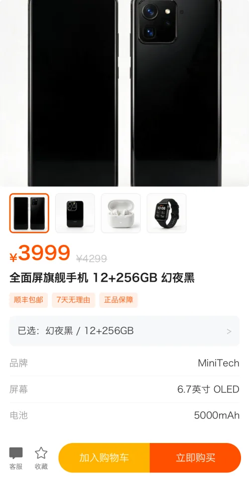
Product detailfixed bottom bar layered over scrolling content Live shoppingvideo layer + overlay stacking Health dashboardgradients, ring progress, shadows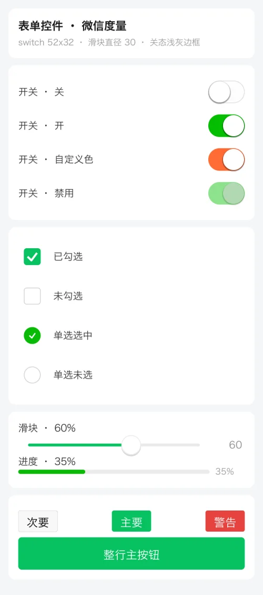
Form controlsswitch / slider / checkbox / radio Picker sheetbottom sheet, implemented in the host layer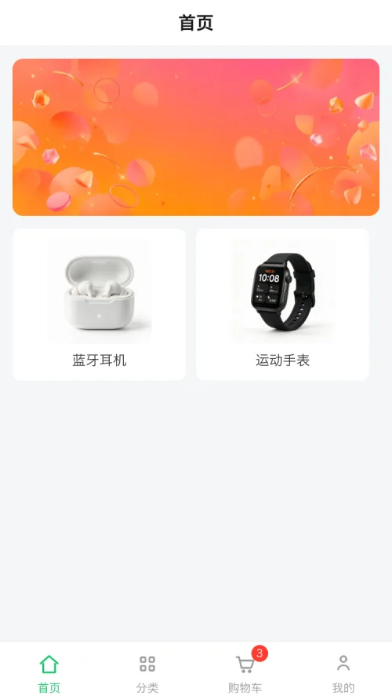
tabBarits own layer, a scrim can dim it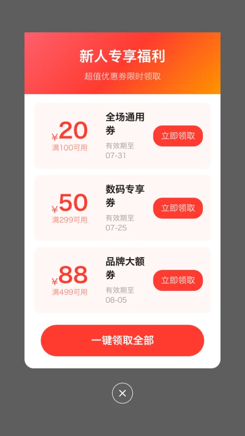
Coupon popuprounded punch-outs and gradient tickets News articlefont size applies instantly, long-form wrapping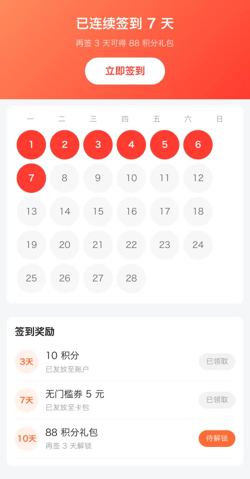
Check-in calendargrid layout and per-state styling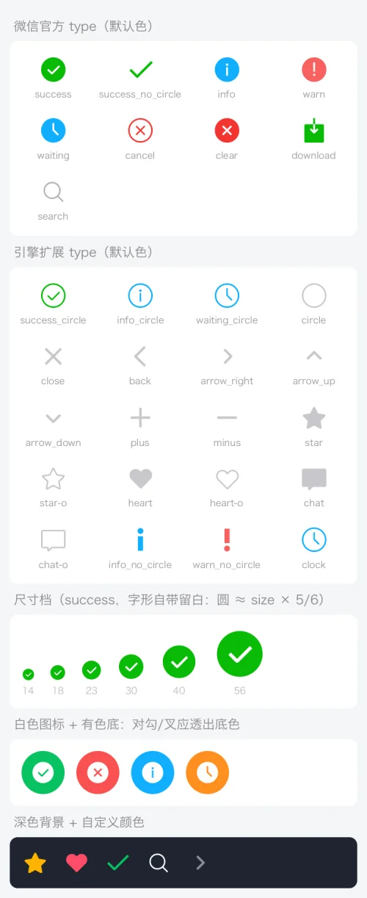
WeUI iconsofficial vector data, not approximated strokes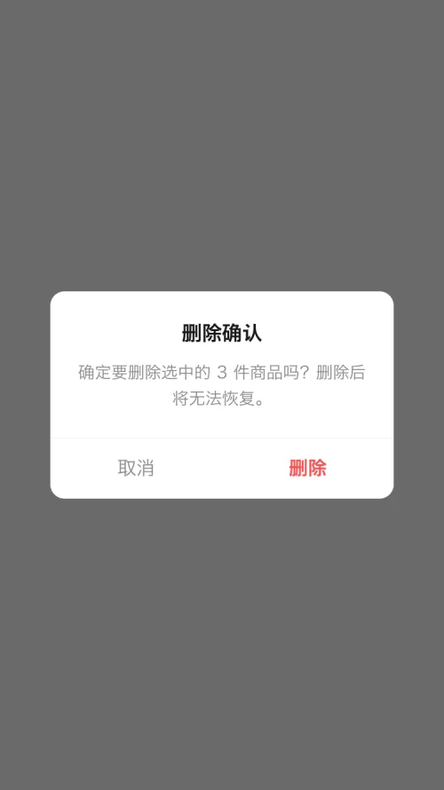
Modal dialogshowModal, with paired press states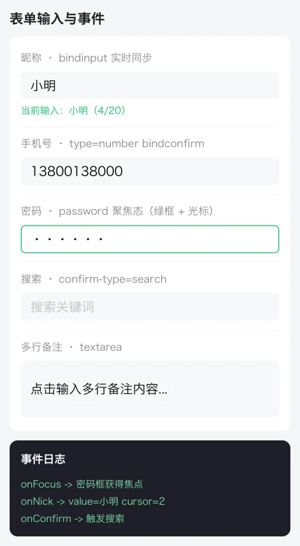
Input eventsfocus / input / blur / confirm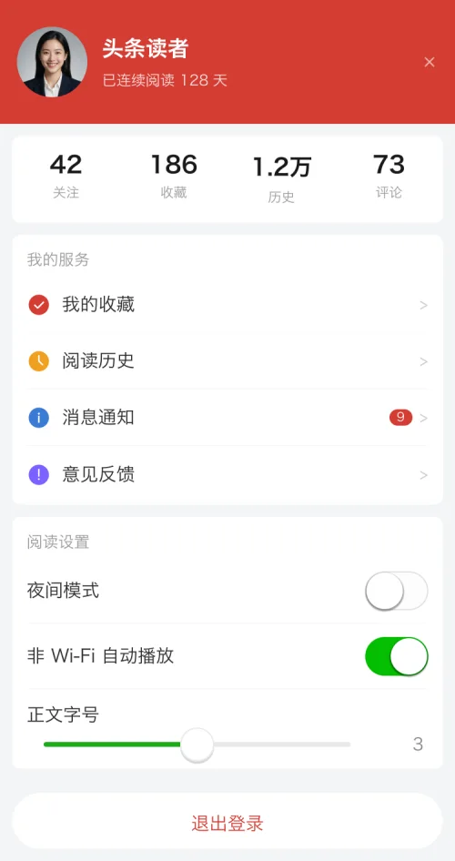
Profilebookmarks and read state persist across launchesAll 65 images, and how the assets are generated, are in the scene gallery doc (Chinese).
Measured numbers
Desktop: 375×667 @2x (750×1334 physical pixels), written pixel by pixel on the CPU; the phone numbers are in the section above. These numbers are a regression criterion, not a marketing line.
On a 144 Hz screen (6.94 ms budget) the shop home's frame interval went from 6.9–25 ms jitter down to 6.7–7.2 ms; the slowest frame from 17.9 ms to 11.4 ms.
The home page's flash-sale countdown invalidates 45×33 pixels, not the screen. A growing list repaints from its first change down; a fixed button appearing repaints only the overlay. When in doubt it falls back to a full frame — stale pixels are far worse than one extra paint.
The page canvas is full-page height in content coordinates, so scrolling just presents a different slice, 2–3 ms per frame. Only the strip you scroll into gets painted, a little before it shows.
Same source: native rendering on one side, compiled to HTML and screenshotted in Chrome on the other, compared per pixel. What remains is concentrated in bold glyph shapes and subpixel text positioning.
sample-app shop15 pages | 4.57% changed pixels |
|---|---|
news-app news6 pages | 6.36% changed pixels |
Not hand-made demo scaffolding.
tea-app36 pages | Output of uni-app compiled to mp-weixin: a 259KB Vue 3 runtime + 60 CommonJS modules |
|---|---|
real-sample8 pages | WeChat's official demo |
sample-app15 pages | Full shop flow: cart → checkout → orders / shipping, cross-page state in storage |
news-app6 pages | Full news flow: channel swiping, live font size, comments, persisted bookmarks |
| Demo catalog30 pages | Shared by the Flutter example and the native Android example: components incl. the Skyline set, new APIs, a mock HTTP feed, same-layer video and map |
Key trade-offs
Every one of these has a mistake behind it; the counter-examples are all written up in the gotchas doc.
The measure context is attached to taffy leaves so real glyphs participate in layout, letting "wrap at the container width" and "a shrinking container pushed out by its content" hold at the same time.
A +4px "safety margin" per text box once made every content-sized badge a ring wider than the browser's.
Changing width / height in @keyframes has no effect; transform / opacity / colors do. What you buy is an animated frame being as cheap as a static one.
Rubber-band damping 1 - 1/(x·0.55/d + 1); bounce-back is a critically damped spring with initial velocity, not a fixed-duration easing; inertia hitting a boundary does not stop dead, it hands its momentum to the spring.
It waits for the first meaningful movement (4px), locks to the dominant axis, then hands off to the outer scroller on "still pushing at the boundary". Swiping vertically inside a horizontal card list scrolls the page; swiping horizontally inside a vertical list moves nothing.
Page stack, route transitions, overlays, touch state machine, gesture arbitration, picker sheet and pixel composition all live in src/host/; only frame scheduling is per-platform. A per-pixel script plus input-behaviour tests guard it from both sides.
The CPU rasterizer is the single pixel reference, so CI and embedded boxes with no GPU produce the same image. The GPU backend (desktop window, Android and the native iOS view) only composites the page / tabBar / fixed layers as textures, byte-identical to the CPU for the same frame, and falls back to the CPU on any failure. No vello / Skia: their own anti-aliasing would make that unverifiable.
All eight, and every "what went wrong" story behind them, are in the gotchas log and architecture & implementation (Chinese).
Getting started
Desktop needs only the Rust toolchain. In an app it is one View — or one Flutter widget.
# needs Rust (https://rustup.rs)
cargo build --release
# pick a sample mini-program interactively
./target/release/mini-launcher
# or name one directly
./target/release/mini-app-window sample-app
./target/release/mini-app-window sample/tea-app --route pages/index/index# images without a window (CI / regression)
./target/release/mini-app-window sample-app --route pages/index/index \
--settle 0 --time 2 --snapshot target/shot
# action flags run in the order written, and repeat
# --touch x,y --swipe x1,y1,x2,y2 --drag px×frames
# --type text --key enter --wheel
# --wait seconds --frames N// pubspec.yaml: mini_render: { path: <repo>/sdk/flutter }
// build the engine first: bash tools/build-mobile.sh android (or ios)
final c = MiniProgramController(
appDir: unpackedDir, // the unpacked mini-program (has app.json)
hostApis: {'login': (args) async => {'code': await myLogin()}}, // chooseImage & co. are built in
nativeComponents: const ['video', 'map'], // hosted by your own widgets
sameLayerViews: const ['map'], // Android: painted into the page, scrolls with it
);
Navigator.push(context, MaterialPageRoute(
builder: (_) => MiniProgramScaffold( // nav bar + back + capsule + engine view
controller: c,
onMenu: () => showMyShareSheet(), // the capsule's "•••"
onExit: () => Navigator.pop(context), // the capsule's "⊙"
),
));// 1) build the libs → jniLibs, then publishToMavenLocal
// bash tools/build-mobile.sh android
// cd sdk/android && ./gradlew publishToMavenLocal
val mini = MiniProgramView(this)
mini.hostApis["login"] = MiniHostApi { call, reply -> reply.success(JSONObject().put("code", myCode())) }
mini.sameLayerViews["map"] = { MyMapView() } // a MiniSameLayerView, painted into the page
setContentView(mini)
mini.open(File(filesDir, "my-mini-app")) // the unpacked mini-program directory
override fun onBackPressed() {
if (!mini.goBack()) super.onBackPressed() // exit only once the page stack is empty
}
override fun onResume() { super.onResume(); mini.onHostResume() }
override fun onPause() { super.onPause(); mini.onHostPause() }// 1) build the lib → sdk/ios/MiniRender.xcframework (device + simulator)
// bash tools/build-mobile.sh ios
let mini = MiniProgramView(frame: view.bounds)
mini.hostApis["login"] = { call, reply in reply.success(["code": myCode()]) }
view.addSubview(mini)
mini.open(appDir: unpackedDir) // renders into its own CAMetalLayer (GPU, CPU fallback)
if !mini.goBack() { navigationController?.popViewController(animated: true) }coalescedTouches, nothing dropped.wxapkg and does no signature checking.<map>, <camera>, <web-view> live in WeChat's native component layer. Hand the engine a frame (sameLayerViews, Android) and it paints it into the page; or let the engine report position and parameters and place WKWebView / android.webkit.WebView / ArkUI Web() yourself. Tags nobody claims draw a labelled placeholder.Scope
"Deliberately not" is a decision, not a backlog item.
swiper, scroll-view, picker-view, grid-view aligned and masonry); navigator / label / form with official behavior; 17 built-in WXML components injected only when a page uses them (movable-view, page-container, draggable-sheet, 8 gesture handlers…); 8 native components drawn as placeholders until the host takes themtouchcancel is synthesized when scrolling takes over)wx:if / wx:for / wx:key / block, the expression engine, template / import / include, wxs modules, custom components (one instance per use site, style isolation, named, default and dynamic <slot>, virtualHost, bubbling triggerEvent, wx://form-field behaviors)@import, CSS variables, rpx, calc(), gradients, shadows, transform / transition / @keyframes, @media (size, orientation, dark mode), @font-facewx.* APIs: TCP / UDP, Worker, WebAudio, EventChannel, route events, request, connectSocket, downloadFile / uploadFile and FileSystemManager, InnerAudioContext, storage persisted across launches, Toast / Modal / ActionSheet, previewImage, routing, createSelectorQuery, createIntersectionObserver, createVideoContext, the tabBar APIs, clipboard, canIUse, network status, loadFontFace; hardware, payment, login and the rest go to the host through hostApis and fail immediately until it claims thempageLifetimes 3)this.animate / clearAnimation with scroll timelines, wx.worklet with applyAnimatedStyle, eight gesture handlers, movable-view with inertia and edge bounce, draggable-sheet with snap points; touch sequences stay on the touchstart node<canvas type="2d"> with gradients, patterns, shadows, composite modes and pixel readback; <video> (MP4 demux + H.264 software decode + audio, playback events, VideoContext, fullscreen, poster, danmu), or hosted by the app's own player--backend / MINI_BACKEND, falls back to the CPU on any failure. Wired into the desktop window, headless, the Android SDK and the native iOS view (CAMetalLayer); the Flutter iOS texture composites on the CPUscroll-view controlled position, events, custom pull-to-refresh, reverse and padding; swiper drag, circular mode, margins and Skyline's direction / indicator-type / layout-type; form submit / reset; picker column linkage and header-text; the inline picker-view wheelMiniProgramScaffold, hostApis, native components through nativeViewBuilder, same-layer sameLayerVideo / sameLayerViews)| Drawing content on the GPU (vello / Skia style) | The GPU backend that exists only composites layers the CPU already drew. Content is always drawn by the CPU, so it stays the single pixel reference and places with no GPU (CI, embedded) produce the same image. Drawing on the GPU would mean a second rasterizer next to the CPU one; not done in this round |
|---|---|
Parsing .wxapkg / signature checks | .wxapkg is WeChat's private compiled format and the signature is WeChat's key system; subpackages, staged rollout and integrity belong to the host, and the engine reads a source directory |
Compiling <web-view> / <map> into the engine | Skyline itself does not render web-view (its component table says "not planned"; such a page falls back to the WebView renderer), and map is a same-layer native component in Skyline: the host draws the map, the engine paints that frame into the page (or reports the position so the host can lay its widget over it) |
| Accommodating code that deviates from WeChat semantics | Skyline is the only alignment target. This is a principle, not a feature that can be implemented |
Each with its impact written down in the test guide: wx:key in incremental invalidation and WXS event handlers; custom components in the H5 export; scrollbars, Skyline's sticky sections and nested scrolling; dragging video progress and picture-in-picture; multi-finger gestures (pinch on movable-view and the scale handler); worklets off the logic thread and swiper worklet callbacks; type="webgl" canvases; bare text placed directly in a <view> does not wrap; inherited color overriding progress / slider / icon defaults; per-element CSS variables and grid-template; textarea auto-height and IME composition; same-layer components on iOS.
<iframe>) — use a WebViewStack
src/ is 410 .rs files / ~88k lines (49 of them test modules),
plus 33 integration-test files; any file over 500 lines gets split. Outside the FFI
boundary, unsafe appears in 12 audited spots — pixel slices
viewed as bytes, surfaces created from a native window pointer, two Android system calls
(logcat, CPU affinity) and one zeroed canvas allocation — each with a SAFETY note; there is
no static mut.
wx.request and remote imageswx.connectSocket: the WebSocket protocol (TLS from the same rustls)wss://, shared with urequnzip / OS randomness for wx.getRandomValueswx.setClipboardData and system file dialogs for wx.chooseImage on macOS / Windows (optional)Android .so, stripped, GPU included | 41.4 MB |
|---|---|
| The same without the GPU backend | 36.3 MB |
| Rust tests | 1055 |
|---|---|
| Scene gallery | 65 images, byte-reproducible |
| Partial-repaint check | 5 desktop scenes + 12 SDK cases, frame by frame |
| SDK vs desktop | sample 15/15, news 6/6 pixel-identical |
| GPU vs CPU | 34/34 byte-identical |
| Flutter plugin tests | 36 |
| Full run | bash tools/regress-async.sh, about 5 min, logged into timestamped batches |
<map> and <video> are still laid over the page thereDocumentation
The documents below are in Chinese; the README is available in English.
How a frame is drawn, layering and module split, how frame cost was driven down, partial repaint, scroll feel and touch alignment, taffy adaptation
Capability matrix, T1–T31 checklists and criteria (every real-phone round and the API / component catch-up with WeChat included), measured memory breakdown, known gaps
Minimal integration, the host's jobs, C ABI, GPU surfaces, iOS / Android / HarmonyOS / Flutter steps, acceptance checklist
"What was once wrong": symptom → root cause → current approach → regression criterion
65 real renders (also the regression baselines) and how the assets are generated
Sample mini-programs, live browser preview, compiling to HTML, Rust / C / mobile code samples
Item-by-item measurements of swipe / tap / longpress / gesture against WeChat
Three-line integration and the three conventions you must know
MiniProgramController / MiniProgramScaffold, host APIs and the built-in pickers, native and same-layer components, navigation bar and capsule, Android system bars
"Repeated frames on screen" as the only criterion; the pitfalls in host presentation, engine invalidation and measurement tooling; current numbers for the Flutter and native examples, same-layer map alignment included